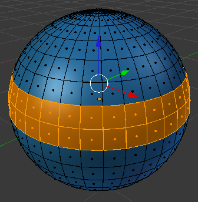

Malla multi-material
¿Es posible decirle a Blender que considere grupos de caras dentro de una malla para darles un color distinto al de la malla general? La respuesta es sí.
El proceso es sencillo y debemos hacerlo desde Modo Edición  y damos por hecho que la malla tiene asignado un primer material. En nuestro caso es de color azul y le hemos dado el nombre bola_azul.
y damos por hecho que la malla tiene asignado un primer material. En nuestro caso es de color azul y le hemos dado el nombre bola_azul.
Seleccionamos las caras que nos interesen.
Al encontrarnos en Modo Edición  hay una novedad en el panel de los materiales. Se trata de tres botones: Asignar, Seleccionar y Deseleccionar.
hay una novedad en el panel de los materiales. Se trata de tres botones: Asignar, Seleccionar y Deseleccionar.
El protocolo ahora es muy intuitivo:
- Creamos un nuevo material para la malla pulsando el signo "+" de la derecha.
- Pulsamos el botón Nuevo (a no ser que lo que queramos sea asignar un material de los que ya se encuentren creados).
- Le ponemos un nombre (buena costumbre). Nosotros lo llamamos bola_naranja. Al ser el último en ser editado queda seleccionado.
- Como las caras ya las tenemos seleccionadas pulsamos el botón Asignar con lo que Blender entiende que esas son las caras destinadas al material seleccionado (en nuestro caso bola_naranja).
- Editamos el nuevo material al gusto.
